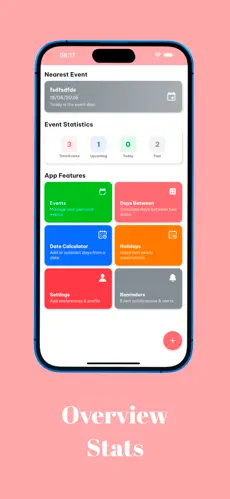

Giới thiệu ứng dụng Tính Ngày - Date Calculator - Date Tools với trợ lý ảo Aiko
Nếu bạn thường xuyên phải tính chênh lệch giữa các mốc thời gian, sắp lịch sự kiện cá nhân hoặc nhắc việc quan trọng, Tính Ngày - Date Calculator - Date Tools là một lựa chọn nổi bật. Ứng dụng tập trung vào trải nghiệm nhanh, dễ dùng, giao diện hiện đại và có thêm trợ lý ảo Aiko để hỗ trợ xử lý thông tin linh hoạt hơn.
Điểm nổi bật của Date Calculator
Ứng dụng được xây dựng theo hướng công cụ thời gian "all-in-one": vừa có khả năng tính ngày chênh lệch, vừa quản lý các sự kiện theo năm, đồng thời hỗ trợ nhắc lịch theo ngữ cảnh cá nhân. Điểm cộng lớn là luồng thao tác mạch lạc: chọn mốc ngày, tính toán, lưu sự kiện và theo dõi lại đều diễn ra trực quan.
Ở góc độ trải nghiệm, các màn hình chính đều thiết kế rõ ràng, màu sắc dễ nhìn, phù hợp sử dụng thường xuyên. Theo thông tin công khai từ store, ứng dụng cũng hỗ trợ Widget, giúp người dùng theo dõi mốc thời gian quan trọng ngay từ màn hình chính mà không cần mở app nhiều bước.
Trợ lý ảo Aiko hỗ trợ ra sao?
Một điểm khác biệt đáng chú ý là sự xuất hiện của Aiko - trợ lý ảo đồng hành trong app. Thay vì phải tự tìm từng mục tính toán, người dùng có thể đi nhanh hơn qua các thao tác thường dùng, tra cứu thông tin thời gian cần thiết và xử lý các nhu cầu lập lịch nhanh trong ngày.
Với nhóm người dùng bận rộn, Aiko giúp giảm thao tác lặp và tăng tốc độ xử lý thông tin ngày tháng, đặc biệt khi cần kiểm tra liên tiếp nhiều mốc sự kiện (deadline cá nhân, lịch hẹn, nhắc lịch định kỳ).
Bộ ảnh giao diện thực tế
Bên dưới là các màn hình thực tế thể hiện rõ định hướng UI đẹp, UX tốt của ứng dụng: từ tổng quan thống kê, danh sách sự kiện đến công cụ cộng trừ ngày tháng.

Link tải nhanh Android và iOS
Date Calculator hiện có mặt trên cả Google Play và App Store. Nếu bạn cần một ứng dụng tập trung vào tính toán thời gian, sắp xếp sự kiện và nhắc lịch tiện lợi bằng Widget, đây là app rất đáng trải nghiệm trong giai đoạn hiện tại.